8月23日对于南方中学的同学们来说无疑是痛苦的一天——这意味着暑假结束，大家要回到学校自习，准备新高二的课程。而对于我们这些“超魔丸バスターズ”团队成员来说，我们还巴不得早点开学。
为啥呢？请听我细细道来。
kingstar 稳定发挥
开学前几天，kingstar跟我们说他想整台太鼓扔学校里玩。
我就知道这孩子废了，但令我想不到的是，他不仅仅是口嗨，而真是个行动派！
他用AbCd的账号下单买了个太鼓控制器，将收货地址填到南方，并远程连接学校机房电脑安装相应游戏程序。目前对于我们来说，唯一安全的地点是机房——我们合法持有钥匙且没有年级组检查，最重要的是只有那里有我们能完全操控的电脑。为了将这个全南方最大的违禁品安全转移到机房，我们制订了严格的计划：根据预测，快递将在8/24中午之前到达校门口，我们要假借家长送饭或者其他物资的名义去门岗拿到快递。刚开学人多眼杂，且我们估计安防部门尚未就绪，所以行动越早越有利。
计划实施
还记得上次kingstar逃寝去办公室过夜吗？（因此kingstar有了逃寝爱莉这个外号）那次行动代号为The Long Dark Basement，这次行动代号是AbCd想出来的，且想当草率，叫咚咚雷音祭（
我提前在机房里放了一台垃圾二手NUC，预装一些通讯工具用来保证组织内相互联络。24日上午，kingstar查询快递发现快递已送往芦淞区，因此当日中午行动是完全可行的，可直到我们吃完中饭，快递仍未送到校区。
这打乱了我们整个行动节奏，因此我们要临时切换到方案B。
学校允许在17:40后走读学生回家吃饭，因此我们要找一名走读生帮忙把快递“偷渡”进来。
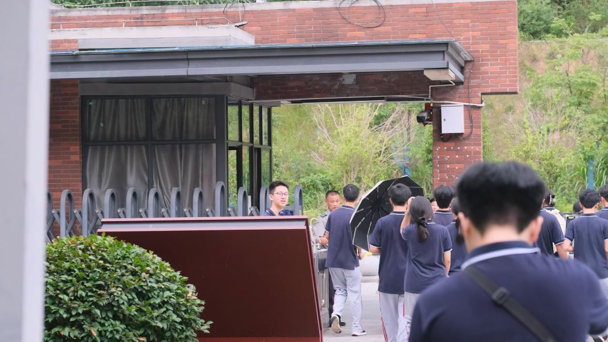
下午再次查询快递发现被放到附近驿站，kingstar找到走读生xyk并告知相关信息。我们要做的就是等待好消息；并且为了将这不可能完成的任务记录下来，我们特地邀请8班电教和10班电教参与拍摄，后续我会将视频版本剪出来（记住这句话）
一语成谶
17:40，我们早早守在校门口，xyk也如期而至。可就当他刚过闸机之时，天公不作美，雨哗啦啦地下起来，雨水淋湿镜头，只留下他模糊的背影。
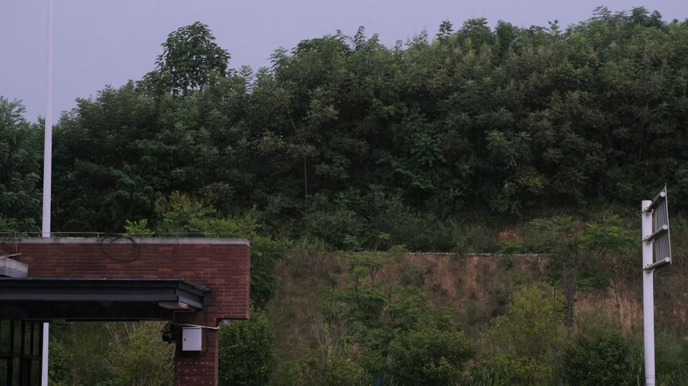
起初我们都认为这是一场小雨，可雨很快越下越大，没几秒就有倾盆之势。我们都没带伞，而xyk也走出校门，我们只能祈祷他在附近的吸烟亭里躲雨，不要被淋的感冒。事实上，我们应该先担心自己，AbCd等人很快跑到附近教学楼躲下，我和kingstar和另一位摄影师则躲到校门口宣传LED屏下，那里刚好够挤下三个人。
雨丝毫没有停下的兆头，虽然在屏幕下避雨，飘进来的雨水也淋湿我的鞋子和小腿，我也隐隐听到雷声；可当我们想迅速离开这里，却发现已经被彻底困住了。
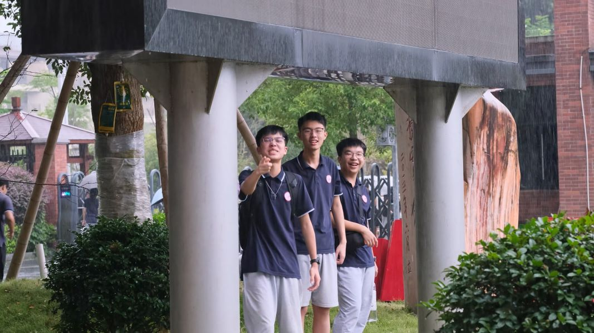
“都怪你！”kingstar冲着教学楼方向对着AbCd大喊：“AbCd你糖爆了，就你想的这鬼代号，非要叫什么咚咚雷音祭，现在真打雷了我们还卡在墙壁里出不去了”……所幸旁边有一些好心的同学路过，撑着伞把我们带回一旁建筑物底下，我们才不至于从头湿到脚。
最漫长的四十分钟
雨停了，我们就在门口等啊等，等啊等，始终看不到xyk的影子。
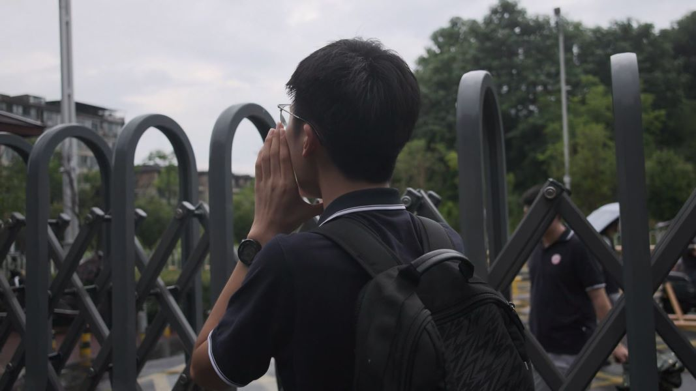
毕竟刚下了这么大的雨，xyk躲雨去了，自己还要吃饭，所以回来晚也情有可原。我们就守在门口，看着走过一个个穿着校服的瘦高背影，却没有一个是xyk。
时间已经到18:00，我们必须要在18:40之前回班晚自习，在此之前我们还要预留时间用来吃完饭，一直这样等下去可不行。kingstar决定主动出击，ping下附近驿站，毕竟我们都不想丢包。
门口保安大哥太性情了，kingstar抱着试一试的心态说是取快递，人家只叮嘱一句别乱买零食就给他放了，所以我们之前搞那么紧张干嘛，自己去不就得了呗。
可当手表的指针转到18:15，kingstar也跟着xyk消失在马路中。19分左右，kingstar空手而归，我们犹如雨后天晴后又晴天霹雳。
“我报了快递单号、手机号和姓名，都说查不到。那些快递查询网站都说放驿站了，怎么会找不到呢？”……诶？
难道说
“难道说——”kingstar突然拖长尾音。
“难道说？”AbCd似乎想到什么。
“难道说！”我们异口同声。
kingstar飞奔至保安室，没过多久，就抱着一个纸箱子出来，打败魔王的道具，就藏在童话里。
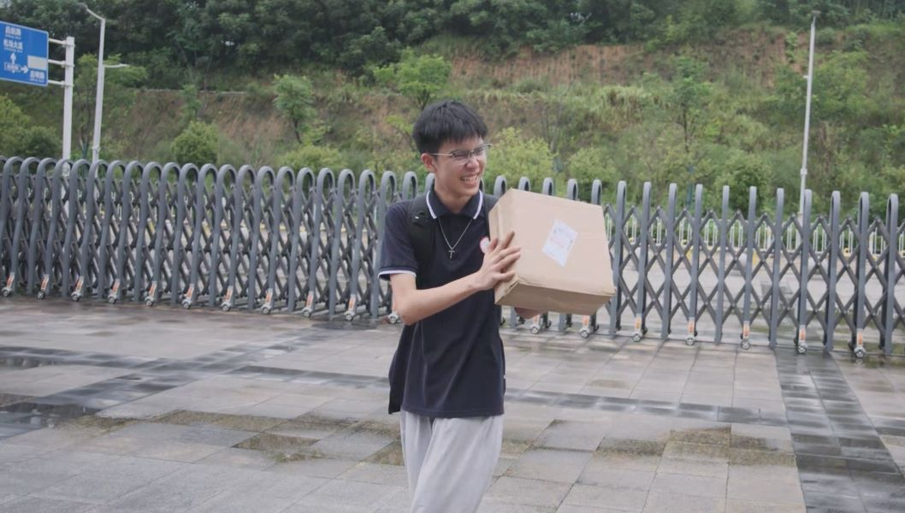
“We did it!”我们齐声欢呼，这一喊可不得了，把旁边路过的老师和同学都吓了一跳，他们都用看傻子一样的眼神瞅过来。我们可不在乎，举着快递就跑进机房了。
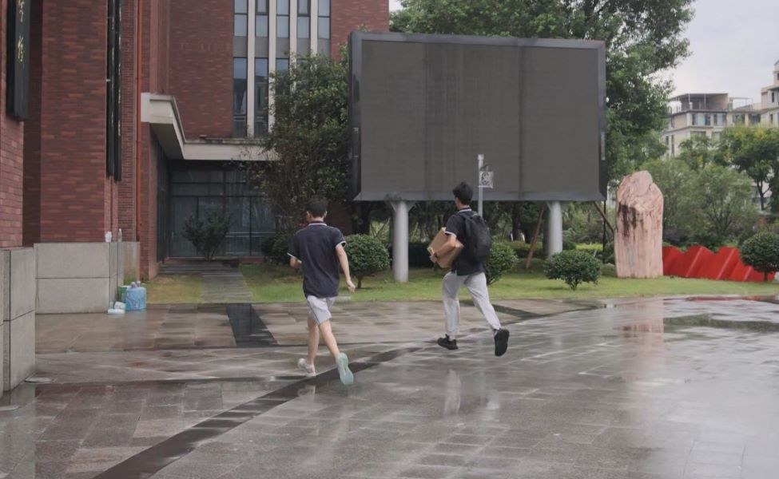
拿到鼓，事情也成功一大半，但我们现在遇到新的挑战，那就是10分钟内速通小卖部买快餐然后回班自习。
ayyc
第二天，我终于有机会仔细瞧瞧那面小鼓，其实乍一看还是挺精致挺可爱的，但实际上那只是一个遥控器被做成鼓的形状，里面就是几个按钮，上面蒙了一层硅胶皮，这手感比街机不知道差了多少，滚奏之类的基本上不用考虑了。不过，一百来块钱的东西你要啥自行车。
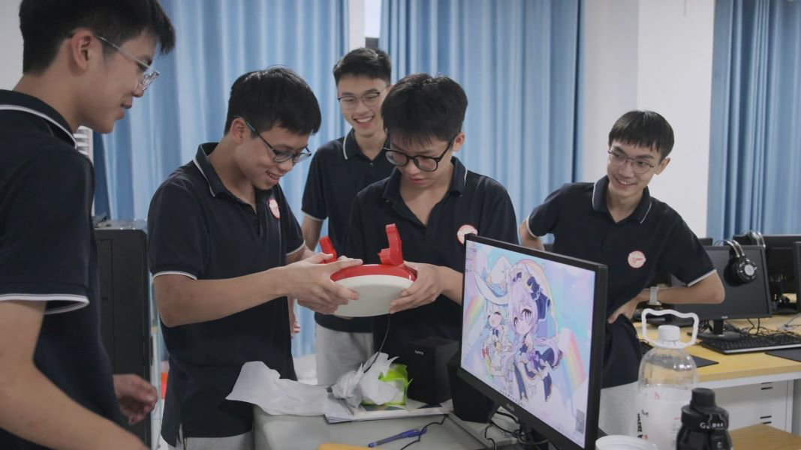
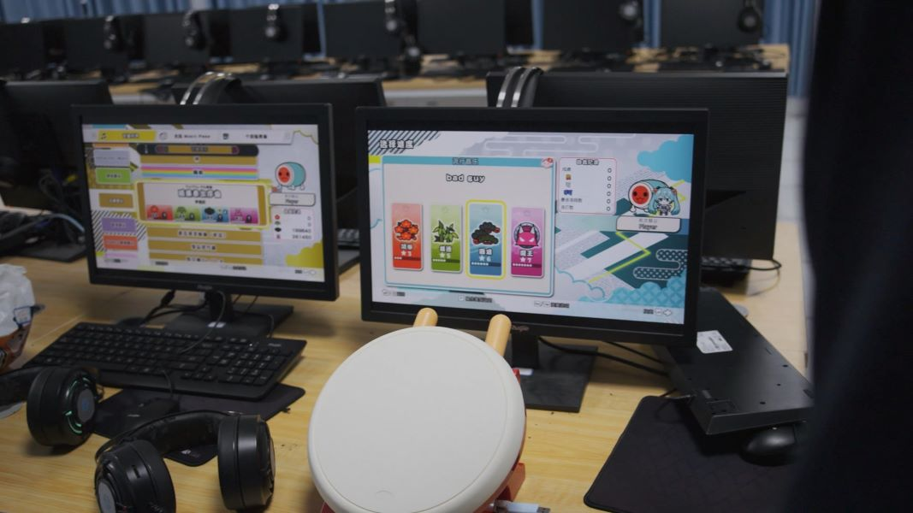
南方中学的音游痴闻着味就来了。株洲这小地方玩街机音游的其实凤毛麟角，像我这种臭打舞萌的可能一层楼能找到三四个，但玩中二节奏或者太鼓的就很难找了。但总之，机房里的都是熟人，我数了数，大抵八九人，一群人在这里还是挺欢乐的。
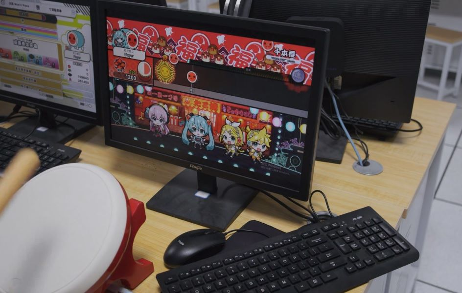
那我们总得搞点仪式对不对？
我将几张卷子撕成条状拼起来，贴在门口；大家先到门外，kingstar手握剪刀，进行剪彩仪式。
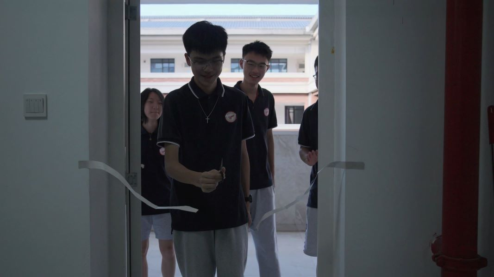
随着清脆的“咔”一声，“彩带”分为两节，我们在门外欢呼、鼓掌。从此，株洲市南方中学成为湖南省第一所拥有太鼓的高中，填补株洲市音游教育的空白，这也意味着我校素质教育迈向了新阶段！这次行动不仅能帮助同学们培养韵律感知能力，还能让同学们在课余时间锻炼身体，缓解学习压力，何乐而不为呢？（当然我们确实挺乐的）
总之，说了这么多，其实关键点还是在“热爱”二字上：如果不是我们对音游、对技术、对Vocaloid的共同热爱，以及同伴间的相互扶持，不可能完成一次次“屡教不改”的冒险——何其有幸，我们在学校里找到了彼此。
我们也组织各种各样的其它活动，比如拿教室门口的安卓电子班牌打舞萌，进行术力口猜歌抢答……篇幅限制，后面慢慢讲。
安全措施
当然，树大招风，来玩的人越多我们就越危险。我们已有前车之鉴，大家都不希望自己和信息老师们遇到麻烦，所以我们制定严格的规则，并且在正式开学后停止大部分游玩活动。
至于那个视频？
咳咳……先让我mkdir……
（4K60帧的视频快给我电脑剪爆了我还得用FFmpeg往死里压压压压压）
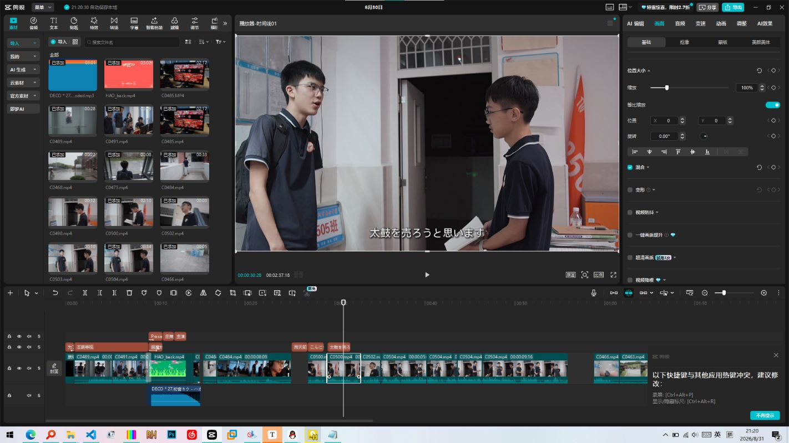